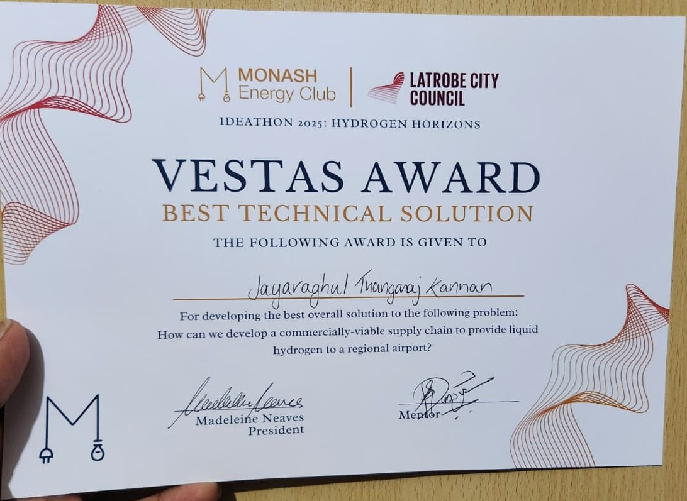

Event
Ideathon 2025 — Hydrogen Horizons
Organised By
Monash Energy Club & Latrobe City Council
Award
🏆 Vestas Award — Best Technical Solution
The Challenge
Latrobe Regional Airport (LATP) is launching zero-emission hydrogen flights to Melbourne. The airport starts with 2 hydrogen aircraft in Year 1, scaling to 8 by Year 3. Each aircraft requires 70 kg of liquid hydrogen per day (two round trips). Teams were asked to answer one question:
"How can we develop a commercially-viable supply chain to provide liquid hydrogen to a regional airport?"
Demand grows from 51,100 kg/yr (Year 1) to 204,400 kg/yr (Year 3). The solution must be technically sound, financially modelled, and scalable — judges scored on both dimensions simultaneously.
Our Solution — LATP AirLift
The team — Purnanand Mule (Mechanical), Roopak Watkar (Civil), Athira Thekkethil (Materials), and myself (Materials) — designed a three-phase hydrogen supply chain that begins with pragmatic near-term sourcing and transitions to full on-site green hydrogen generation by Year 3, with a 10-year vision for LATP becoming a regional hydrogen hub.
Bootstrap Supply
- Source LH₂ from Latrobe H facility (brown coal) or BOC methane H₂ plant at Altona
- Set up small electrolysis plant at airport for future transition
- Cryogenic truck delivery — 14 trips/year, 20 km haul
- 1 × 3,000 kg cryogenic storage tank on-site
- 2 refrigeration units for liquefaction
On-Site Electrolysis
- Full electrolysis H₂ plant operating at airport
- Desalinated water supply contracted
- Buy grid green electricity — operate during peak solar hours
- 2 fridge units + 1 container unit
- Begin selling surplus H₂ and O₂ byproduct
Solar-Powered Hub
- On-site solar farm commissioned — 100% renewable H₂
- 2 × 3,000 kg storage tanks for full fleet demand
- Continued surplus H₂ and O₂ revenue stream
- Foundation for regional hydrogen hub and export
- 10-year vision: 20 aircraft, battery storage, pipeline
Capital & Operating Cost Model
Every design decision was costed. The full capital and operating expenditure model was developed for the three-phase infrastructure build-out, with revenue projections from Year 2 onwards through surplus hydrogen and oxygen sales.
Revenue Projection — Surplus H₂ & O₂ Sales
How the Revenue Model Was Built
The $9.7M Year 3 revenue figure is not a round estimate — it is a bottom-up calculation from H₂ surplus volume and market pricing. The methodology was transparent enough that judges could interrogate any line item.
H₂ Demand Sizing
8 aircraft × 70 kg/day × 365 days = 204,400 kg/yr total H₂ demand at full Year 3 fleet. Year 1 starts at 2 aircraft (51,100 kg/yr), doubling each year with fleet scaling.
Production Capacity & Surplus
The Phase 2/3 large electrolysis plant is sized for 377,118 kg/yr total production — above fleet demand to enable commercial H₂ and O₂ sales. Year 3 surplus: 377,118 − 204,400 = 172,718 kg H₂ available for sale.
H₂ Revenue Calculation
172,718 kg surplus × AUD $30/kg (wholesale industrial green H₂ price, ARENA 2024 reference) = AUD $5,181,540. Price benchmarked conservatively against current Australian PEM electrolyser output pricing.
O₂ Byproduct Revenue
PEM electrolysis produces 8 kg O₂ per kg H₂. 172,718 kg H₂ × 8 = 1,381,744 kg O₂. Priced at AUD $2.18/kg (medical/industrial O₂ market, BOC Australia reference) = AUD $3,016,944. Combined Year 3 total: AUD $9,198,484 (~$9.7M including Year 1 O₂).
Design Constraints & Key Decisions
The ideathon brief was deliberately constrained: the solution had to work from Year 1 with existing infrastructure, scale to 8 aircraft by Year 3, and be financially defensible — judges assessed commercial viability and technical rigour simultaneously. Three decisions shaped the design:
- Phase 1 uses brown-coal H₂ sourcing, not green: A fully green Year 1 supply chain was not achievable within budget and timeline constraints. The deliberate choice to source from Latrobe H (brown coal) in Year 1 — while building the electrolysis infrastructure in parallel — was the commercially honest position and a stronger answer than an idealised-but-undeliverable green-from-day-one claim.
- Cryogenic delivery over pipeline: A pipeline from a central H₂ facility was technically possible but required infrastructure investment that exceeded the project scope and the airport's Year 1 capital appetite. Cryogenic truck delivery (14 trips/year, 20 km haul) provided the required flexibility and was costed to prove viability.
- O₂ revenue included from Year 1: Even in ramp-up, the electrolysis plant produces O₂ as a byproduct. Including the $73,584 Year 1 O₂ revenue was important — it reduced net operating cost and was the honest accounting that separated the financial model from back-of-napkin estimates.
Strategic Value Proposition
Sustainability Alignment
Aligns with UN SDGs 7, 9, 11, and 13. Supports Australia's 2035 net-zero target. Avoids more than 15,000 tonnes of CO₂ by 2035 across the fleet lifecycle.
Research & Innovation
R&D partnership pathway with Monash University covering microgrids, smart refuelling systems, and AI-optimised logistics for hydrogen delivery scheduling.
Government Funding Eligibility
Eligible for ARENA, CEFC, and Hydrogen Hubs programmes. Directly aligned with Victoria's Hydrogen Roadmap — unlocking public-private co-investment from Phase 1.
Community & Economic Impact
Creates local clean energy jobs in the Latrobe Valley. Repurposes existing coal infrastructure for hydrogen production — a just transition narrative with strong regional stakeholder appeal.
Award & Event


Outcomes
🏆 Vestas Award Won
Awarded Best Technical Solution from a competitive field — judged on simultaneous technical rigour and commercial viability.
Full Supply Chain Designed
Three-phase LH₂ supply chain from bootstrap sourcing through to on-site solar-powered electrolysis, costed at AUD $16.99M total CAPEX.
Revenue Model Demonstrated
Surplus H₂ and O₂ byproduct sales generate ~AUD $2.8M in Year 2, growing to ~AUD $9.7M by Year 3 — turning infrastructure cost into a commercial asset.
Industry Pitch Delivered
Presented a concise, high-impact technical and commercial case to senior judges from Vestas, Latrobe City Council, and the energy sector.